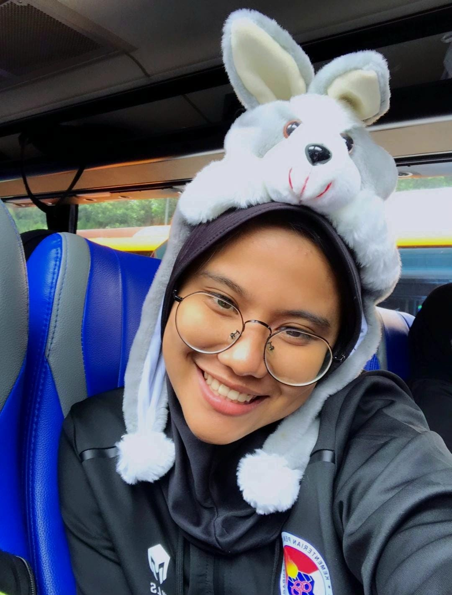
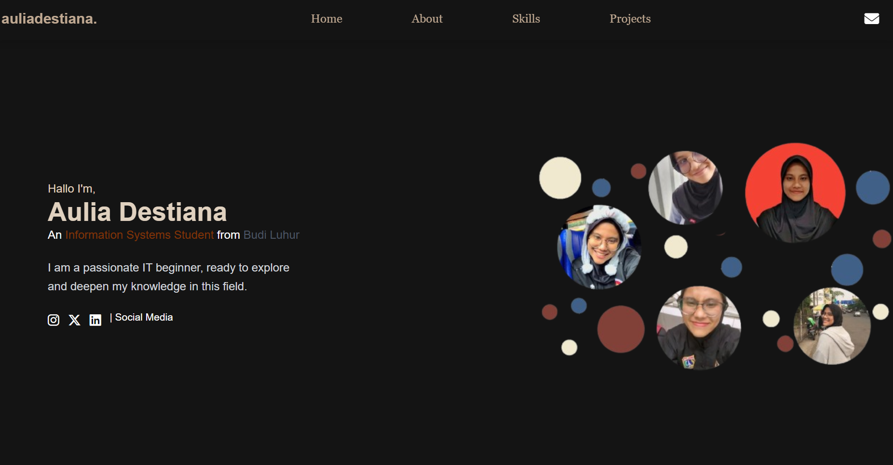
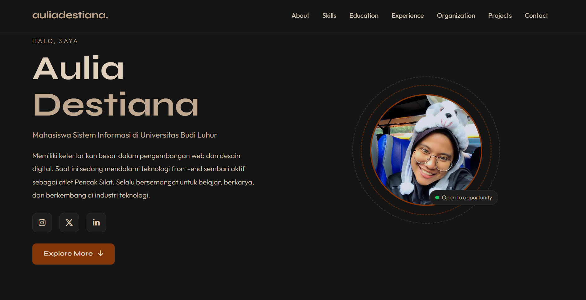
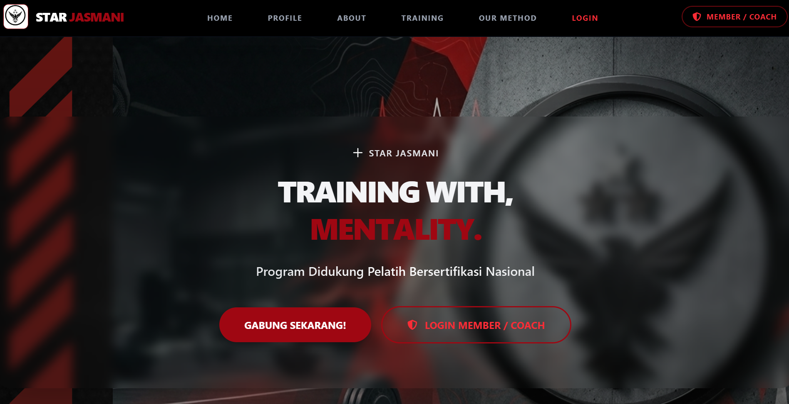

Halo, saya
Mahasiswa Sistem Informasi di Universitas Budi Luhur
Memiliki ketertarikan besar dalam pengembangan web dan desain digital. Saat ini sedang mendalami teknologi front-end sembari aktif sebagai atlet Pencak Silat. Selalu bersemangat untuk belajar, berkarya, dan berkembang di industri teknologi.
Explore More
Saya memiliki ketertarikan besar dalam dunia pemrograman, khususnya web development. Saya terus belajar dan mengembangkan kemampuan dalam HTML, CSS, JavaScript, dan PHP untuk membangun website yang fungsional dan menarik. Setiap project adalah kesempatan baru untuk tumbuh dan berkreasi.
Di luar dunia digital, saya adalah atlet Pencak Silat aktif yang telah berkompetisi sejak kecil. Olahraga bela diri ini mengajarkan saya tentang kedisiplinan, ketekunan, dan semangat pantang menyerah — nilai-nilai yang juga saya terapkan dalam belajar dan kesharian setiap hari.
Struktur markup HTML5 semantik untuk web yang accessible dan SEO-friendly.
Styling modern dengan Flexbox, Grid, animasi, dan responsive design.
Back-end scripting untuk aplikasi web dinamis dan pengelolaan data.
Interaktivitas front-end, DOM manipulation, dan logika aplikasi web.
Utility-first CSS framework untuk rapid UI development yang konsisten.
Component-based framework untuk UI yang responsif dan cepat dikembangkan.
Universitas Budi Luhur
Sedang menempuh studi Semester 6, dengan fokus pada pengembangan sistem informasi, teknologi web, dan analisis data bisnis khusus di bidang olahraga.
SMAN Ragunan SKO Jakarta
Menyelesaikan pendidikan di Sekolah Khusus Olahraga (SKO) Ragunan Jakarta, sembari aktif berlatih dan berkompetisi sebagai atlet Pencak Silat.
SMP Negeri 13 Kota Serang
Dibesarkan di lingkungan Pencak Silat oleh ibu saya sejak kecil, saya tumbuh dengan disiplin tinggi hingga kini dipercaya menjadi atlet binaan PPLP Banten. Alasan bersekolah di sini adalah karena lokasinya yang dekat dengan asrama, memudahkan saya membagi waktu antara sekolah dan latihan.
Academic / Personal Projects
Membangun dan mengembangkan website personal dan proyek akademik menggunakan HTML, CSS, JavaScript, Bootstrap, dan Tailwind CSS. Berfokus pada responsive design dan user experience yang baik.
Active Competitor
Atlet Pencak Silat aktif yang telah mengikuti berbagai kompetisi daerah dan nasional. Mengembangkan disiplin, ketahanan mental, dan kemampuan kerja tim melalui latihan dan kompetisi rutin.
Universitas Budi Luhur
Memimpin Unit Kegiatan Mahasiswa Pencak Silat Universitas Budi Luhur, mengkoordinasikan program latihan, dan membimbing anggota dalam mencapai prestasi terbaik di tingkat regional maupun nasional.
Wisuda Mei 2026 — Universitas Budi Luhur
Berperan sebagai volunteer paduan suara dalam acara Graduation Wisuda Mei 2026, membantu kelancaran pelaksanaan acara dan memberikan pelayanan terbaik kepada peserta wisuda.
Slot ini tersedia untuk organisasi atau kepanitiaan berikutnya.

Website portofolio pribadi yang dibangun menggunakan Tailwind CSS dibuat pada saat di semester 3 untuk belajar dan eksplorasi teknologi web - BELUM DI UPDATE.

Website CV personal yang sedang Anda lihat sekarang, dibangun dengan Bootstrap 5 (via npm), local fonts, dan desain dark mode elegan.

platform digital untuk bimbingan seleksi TNI/Polri/Kedinasan yang dilengkapi sistem laporan data untuk memantau performa atlet oleh admin, melacak riwayat cedera, serta menampilkan grafik perkembangan fisik secara langsung kepada member.
Jangan ragu untuk menghubungi saya melalui platform berikut.